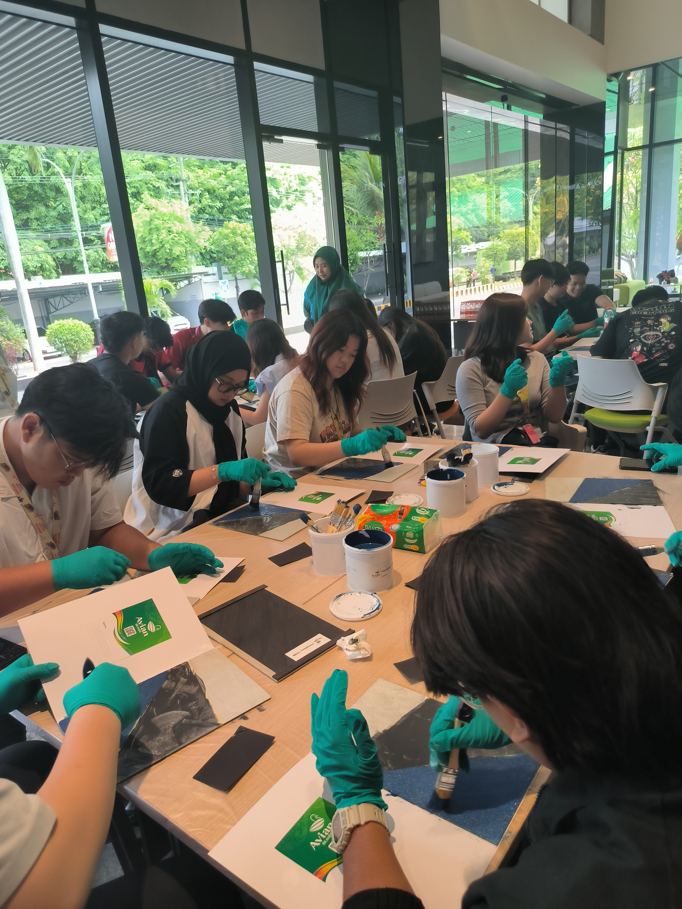
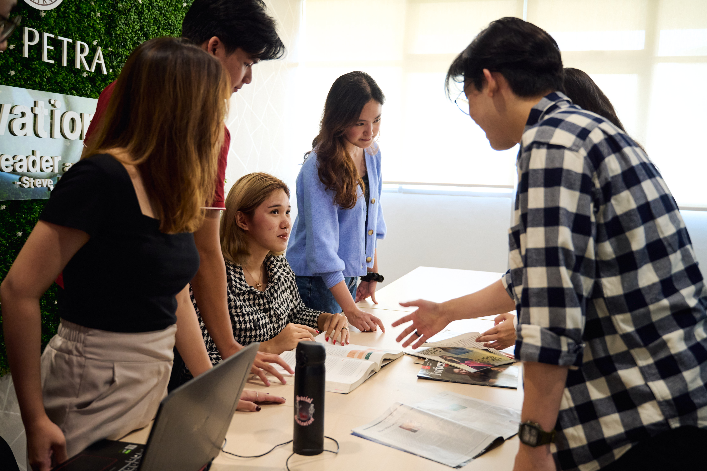
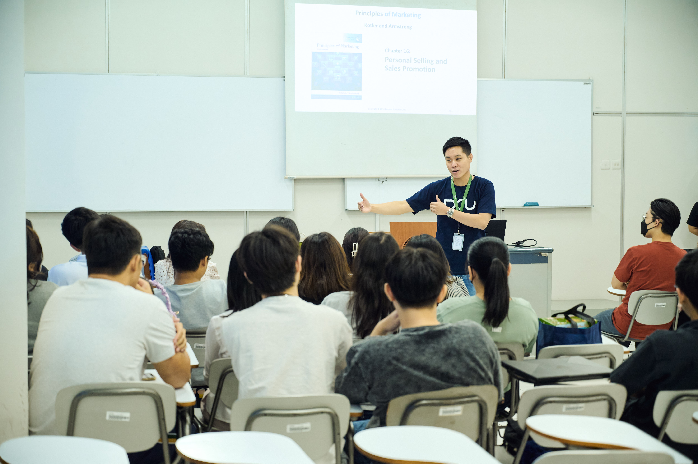
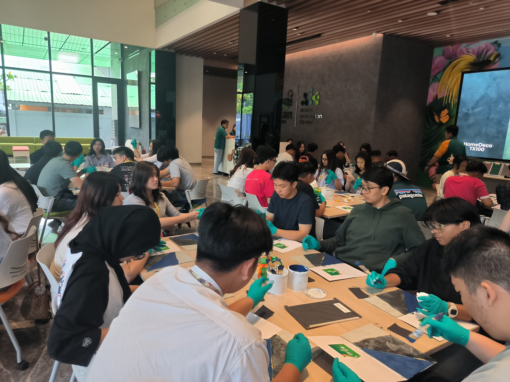

PETRA × DANAMON
1
4
65–70
2







| 12.00–17.00 | |||
| 17.00–18.00 | |||
| 18.30–20.00 | |||
| 20.00 | — |
| 08.00–08.30 | — | ||
| 09.00–10.30 | |||
| 10.30–11.00 | — | ||
| 11.00–12.00 | |||
| 12.00–13.00 | — | ||
| 13.00–15.00 | |||
| 15.00–16.00 | |||
| 16.00 | — |
| 08.30–09.00 | — | ||
| 09.00–10.30 | |||
| 10.30–10.45 | — | ||
| 10.45–12.15 | |||
| 12.15–13.15 | — | ||
| 13.15–15.00 | |||
| 15.00–16.00 | |||
| 16.00 | — |
| 08.00–08.45 | — | ||
| 09.00–10.30 | |||
| 10.30–10.45 | — | ||
| 10.45–12.00 | |||
| 12.00–13.00 | |||
| 13.00–15.00 | |||
| 15.00–16.00 | — | ||
| 16.00 | — |
| 08.00–08.30 | — | ||
| 08.30–11.00 | |||
| 11.00–13.00 | |||
| 13.00–13.30 | — | ||
| 13.30–16.00 | |||
| 16.00–17.00 | — | ||
| — |
| 08.30–09.00 | — | ||
| 09.00–10.30 | |||
| 10.30–12.00 | |||
| 12.00–13.00 | — | ||
| 13.00–14.30 | |||
| 14.30–16.00 | — | ||
| 18.30–21.30 | |||
| 21.30 | — |
| 07.00–09.00 | — | ||
| 09.00–10.00 | — | ||
| No | ||||||
|---|---|---|---|---|---|---|
| 1 | 10 | 6 | 650.000 | 39.000.000 | ||
| 2 | 5 | 6 | 650.000 | 19.500.000 | ||
| 58.500.000 | ||||||
| 3 | 2 | 1 | 1.500.000 | 3.000.000 | ||
| 4 | 1 | 5 | 1.800.000 | 9.000.000 | ||
| 5 | 1 | 5 | 300.000 | 1.500.000 | ||
| 13.500.000 | ||||||
| 6 | 20 | 5 | 50.000 | 5.000.000 | ||
| 7 | 20 | 4 | 110.000 | 8.800.000 | ||
| 8 | 70 | 3 | 35.000 | 7.350.000 | ||
| 9 | 50 | 3 | 50.000 | 7.500.000 | ||
| 28.650.000 | ||||||
| 10 | 4 | 1 | 1.000.000 | 4.000.000 | ||
| 11 | 1 | 1 | 2.500.000 | 2.500.000 | ||
| 12 | 1 | 3 | 1.500.000 | 4.500.000 | ||
| 13 | 70 | 1 | 25.000 | 1.750.000 | ||
| 14 | 70 | 1 | 50.000 | 3.500.000 | ||
| 16.250.000 | ||||||
| 116.900.000 | ||||||
| No | ||||||
|---|---|---|---|---|---|---|
| 116.900.000 | ||||||
| 15 | 70 | 1 | 150.000 | 10.500.000 | ||
| 16 | 70 | 1 | 100.000 | 7.000.000 | ||
| 17 | 70 | 1 | 125.000 | 8.750.000 | ||
| 26.250.000 | ||||||
| 18 | 1 | 1 | 8.000.000 | 8.000.000 | ||
| 19 | 20 | 1 | 100.000 | 2.000.000 | ||
| 20 | 70 | 1 | 150.000 | 10.500.000 | ||
| 21 | 1 | 1 | 6.000.000 | 6.000.000 | ||
| 22 | 1 | 1 | 3.000.000 | 3.000.000 | ||
| 29.500.000 | ||||||
| 23 | 70 | 1 | 100.000 | 7.000.000 | ||
| 24 | 70 | 1 | 80.000 | 5.600.000 | ||
| 25 | 1 | 1 | 10.000.000 | 10.000.000 | ||
| 26 | 1 | 1 | 3.000.000 | 3.000.000 | ||
| 25.600.000 | ||||||
| 27 | 1 | 1 | 2.500.000 | 2.500.000 | ||
| 28 | 20 | 1 | 100.000 | 2.000.000 | ||
| 29 | 1 | 1 | 3.000.000 | 3.000.000 | ||
| 7.500.000 | ||||||
| 205.750.000 | ||||||
| 20.575.000 | ||||||
| 226.325.000 | ||||||
| 58.500.000 | 58.500.000 | |
| 13.500.000 | 13.500.000 | |
| 28.650.000 | 28.650.000 | |
| 16.250.000 | 16.250.000 | |
| 26.250.000 | 7.500.000 | |
| 29.500.000 | 29.500.000 | |
| 25.600.000 | 25.600.000 | |
| 7.500.000 | 7.500.000 | |
| 205.750.000 | 187.000.000 | |
| 20.575.000 | 18.700.000 | |
| 226.325.000 | 205.700.000 |